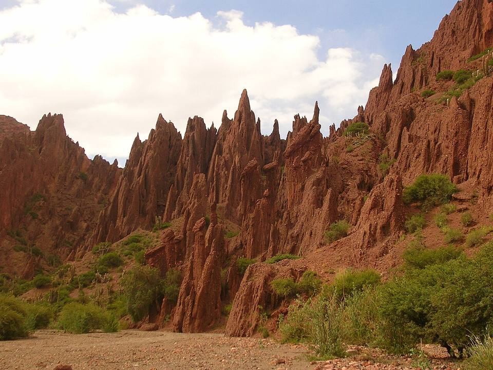
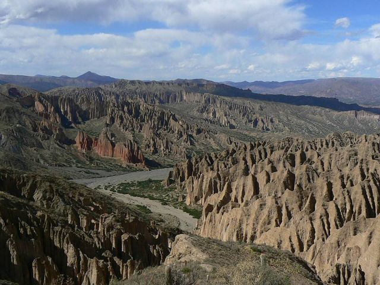
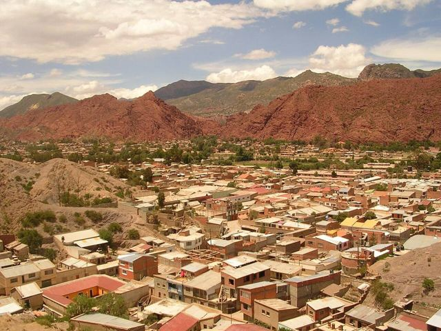
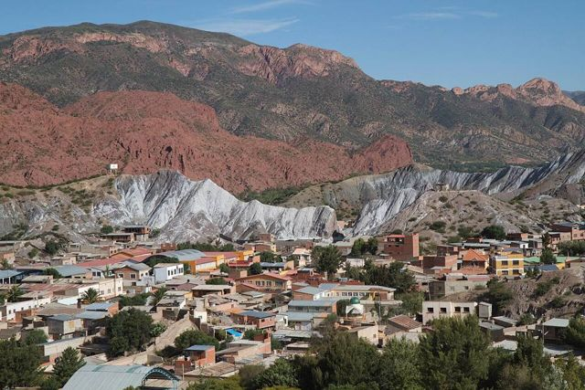
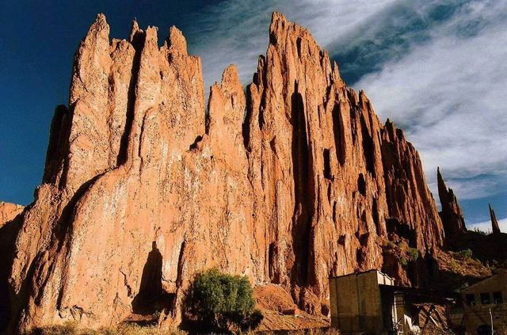
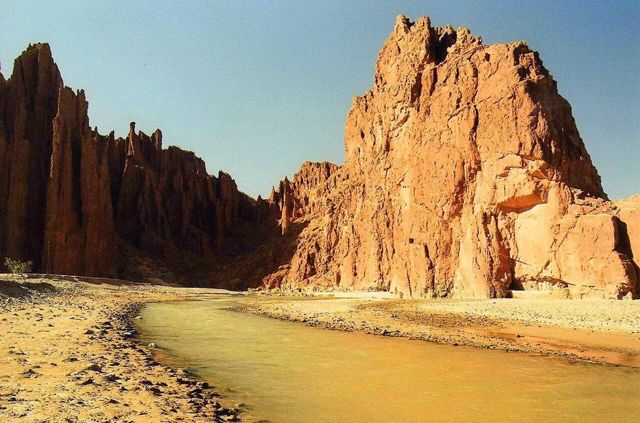
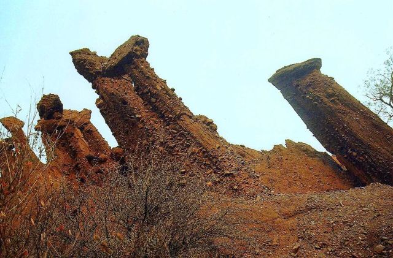
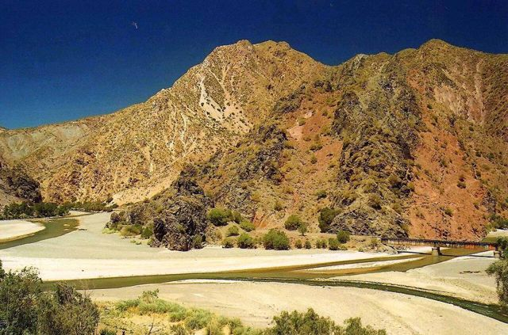

Tupiza
Potosí Department · Nature and hiking

Tupiza looks like a western film set: red canyons, giant cacti and dry riverbeds. It's in this region that Butch Cassidy and the Sundance Kid are said to have met their end. It's great for horse riding, and you can start the Sud Lípez tour from here in the other direction.
2,950 maltitude
1 to 2 daysto spend there
Things to do
- Horse ride through the canyons (Quebrada de Palala, Puerta del Diablo)
- Cañón del Inca
- Alternative start of the Sud Lípez tour (4 days, ending in Uyuni)
What to eat
- Llama meatLean and tasty meat, often grilled or as “charque” (dried). Very common in Uyuni and on the Altiplano.
- Picante mixtoA plate of several meats (chicken, tongue, beef) in chilli sauce, with chuño and rice. For chilli lovers.
- ChichaFermented corn beer, slightly sour, served in gourds (tutumas). Look for chicherías marked with a white flag.
Tip. Lower (2,950 m) and warmer than Uyuni.
How to get to Tupiza
Salar de Uyuni 4x4 tour or excursion · Included (4-day tour)
A version of the tour that starts in Tupiza and ends in Uyuni, crossing the Sud Lípez.
Cotagaita Road (bus, car) · 1 h 30
Bus or minibus.
Villazón Road (bus, car) · 1 h 30
Frequent buses and shared taxis.
Villazón Train · about 3 h
Altiplano train (a few departures a week), continuing the line from Uyuni.
Uyuni Road (bus, car) · 4 to 6 h
Daily buses.
Uyuni Train · 5 h 30
The same FCA line as from Oruro (continuing to Villazón).
Tarija Road (bus, car) · 6 to 7 h
Daily buses.
Photos of Tupiza



.JPG){kind=link}










More places in this region
 Sajama National ParkBolivia's highest peak (6,542 m), geysers, hot springs and llamas.
Sajama National ParkBolivia's highest peak (6,542 m), geysers, hot springs and llamas. Curahuara de CarangasThe “Sistine Chapel of the Altiplano”: an adobe church covered in murals.
Curahuara de CarangasThe “Sistine Chapel of the Altiplano”: an adobe church covered in murals. OruroAn Altiplano mining city, famous for its UNESCO-listed carnival. Starting point of the train to Uyuni.
OruroAn Altiplano mining city, famous for its UNESCO-listed carnival. Starting point of the train to Uyuni. Obrajes and Capachos hot springsNatural hot-water pools on the Altiplano, less than an hour from Oruro.
Obrajes and Capachos hot springsNatural hot-water pools on the Altiplano, less than an hour from Oruro. Machacamarca railway museumOld steam locomotives and the history of the mining railways, south of Oruro.
Machacamarca railway museumOld steam locomotives and the history of the mining railways, south of Oruro. Lakes Uru Uru and PoopóShallow Altiplano lakes on Oruro's doorstep, visited by flamingos.
Lakes Uru Uru and PoopóShallow Altiplano lakes on Oruro's doorstep, visited by flamingos. ChipayaVillage of the Uru-Chipaya, one of the oldest peoples of the Andes, with round earthen houses.
ChipayaVillage of the Uru-Chipaya, one of the oldest peoples of the Andes, with round earthen houses. Coipasa Salt FlatBolivia's second-largest salt flat, wild and almost without visitors.
Coipasa Salt FlatBolivia's second-largest salt flat, wild and almost without visitors. UyuniBase town for Salar tours, with a train cemetery on the edge of town.
UyuniBase town for Salar tours, with a train cemetery on the edge of town. Salar de Uyuni + Sud Lípez (tour)The world's largest salt flat, then the colourful lagoons of the Sud Lípez. The highlight of many trips.
Salar de Uyuni + Sud Lípez (tour)The world's largest salt flat, then the colourful lagoons of the Sud Lípez. The highlight of many trips.- CotagaitaA small green town in a fruit-growing valley, on the road from Potosí to Villazón.
 VillazónThe border with Argentina, facing La Quiaca: the crossing travellers use most.
VillazónThe border with Argentina, facing La Quiaca: the crossing travellers use most.